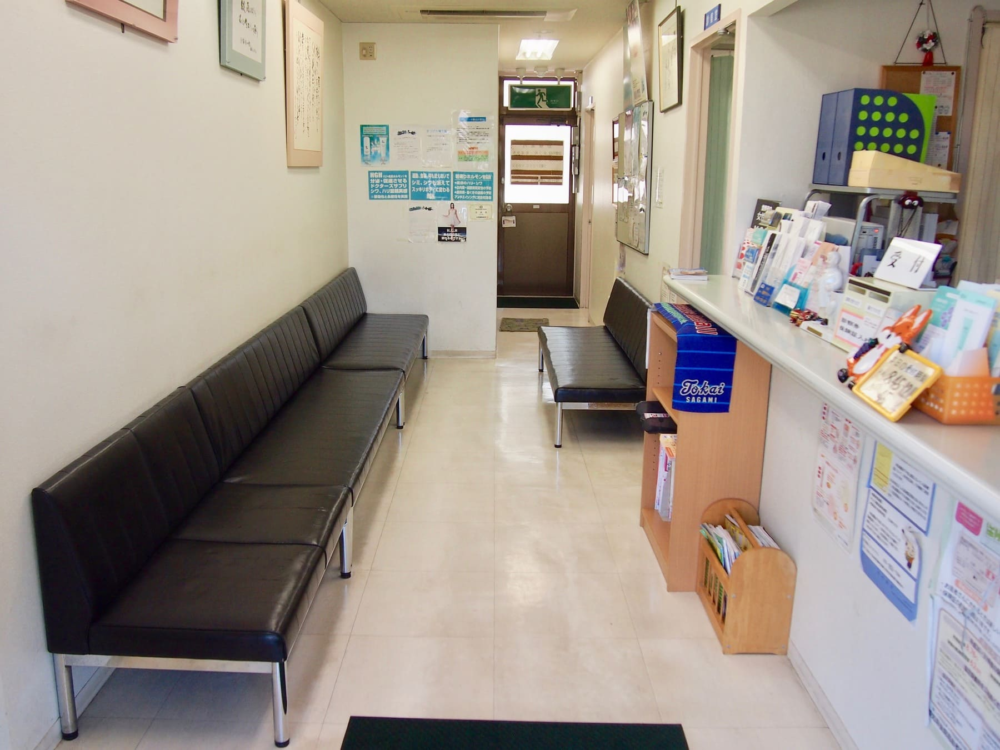
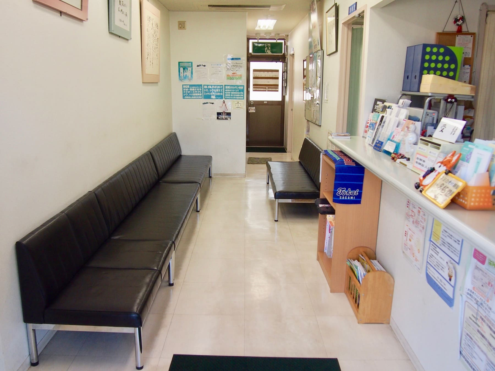

-
 


福井皮フ科
名古屋市中川区に開業して１０数年。一般皮膚科はもちろん、大学病院時代から専門である皮膚の腫瘍（ほくろやあざも含めて）・アトピー性皮膚炎をはじめとするアレルギー疾患・ピーリング・フォトフェイシャル・脱毛・イオン導入などの美容皮膚科にも力を入れてきました。どんな相談もお気軽に。
顔に小さなほくろが気になるけど、こんな事で医者にかかってもおかしいかな。背中がかゆくて、夜目がさめるけど、家族は何も出来て無いという、しかたないかな｡陥入爪・巻き爪で爪が食い込んで少し痛い、額のニキビが気になる、手荒れが少しある、虫さされでかゆい、アトピー性皮膚炎で悩んでいる、顔にシミが出来た等々、日常でしばしばしばしば出会う皮膚病から、ほくろ、メラノーマ、皮膚癌、膠原病など命に関わるような皮膚病、切り傷、挫滅創などの怪我、シミ、しわ、美白、美顔など、美容皮膚科まで、よろず皮膚の相談引き受けます。
皮膚に関するする事ならどんな事でもご相談ください。近隣の医療機関、名大病院、名古屋掖済会病院、第一日赤病院、中京病院などの関連病院とも密接に連携して診療に当たっています。